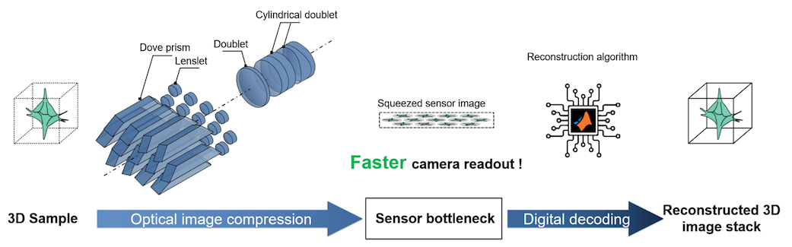
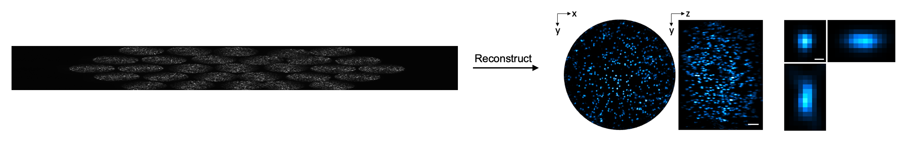
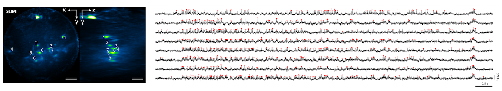
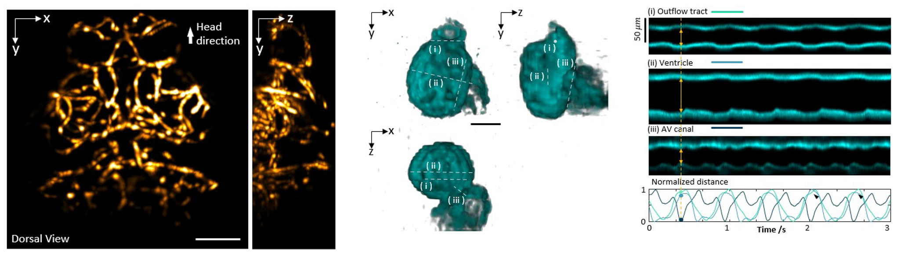

SLIM addresses the sensor framerate bottleneck in light field microscopy by taking advantage of information redundancy in light field raw measurements. Using a series of optical image rotation and scaling, SLIM squeezes the raw measurement into a letterbox-like small region of interest on camera sensor. And a reconstruction algorithm reconstructs the squeezed measurement back into a 3D image stack in post-processing. Due to fewer number of pixels being readout, higher imaging speed could be achieved during acquisition. SLIM demonstrated kilohertz 3D imaging in blood flow of embryonic zebrafish, neuronal voltage signals of leech ganglion, and of hippocampus of behaving mice.

Demo
SLIM optially captures a small compressed frame (left) and digitally reconstructs it into 3D image stack (right). Demos of SLIM reconstruction can be found in Code where a graphic user interface is provided for quick walk-through.

Hemodynamic imaging in behaving animal
Flowing red blood cells in zebrafish brain. Captured at 1,000 volumes per second (vps).
Flowing red blood cells in unconstrained swimming zebrafish tail @ 1,000 vps.
Continuous 3D voltage imaging over extended time
Voltage spikes in leech ganglion loaded with voltage dye @ 800 vps.

Voltage spikes in hippocampus in behaving mouse expressing genetic encoded voltage indicator @ 800 vps for three minutes continously. The red dots mark the detected spikes. Red lines (second row) delineate the sub-threshold oscillation in detected signals.
Vasculature and cardiac imaging

Vessels in zebrafish brain (left) and beating heart recorded @ 300 vps.